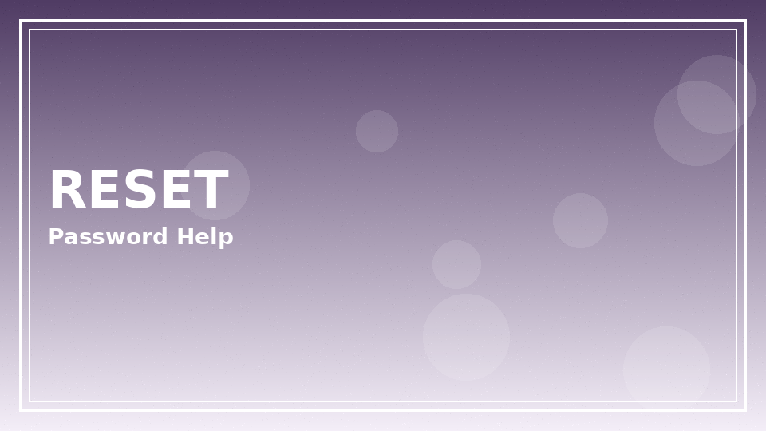
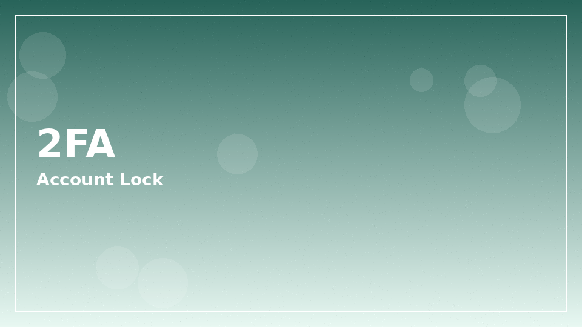
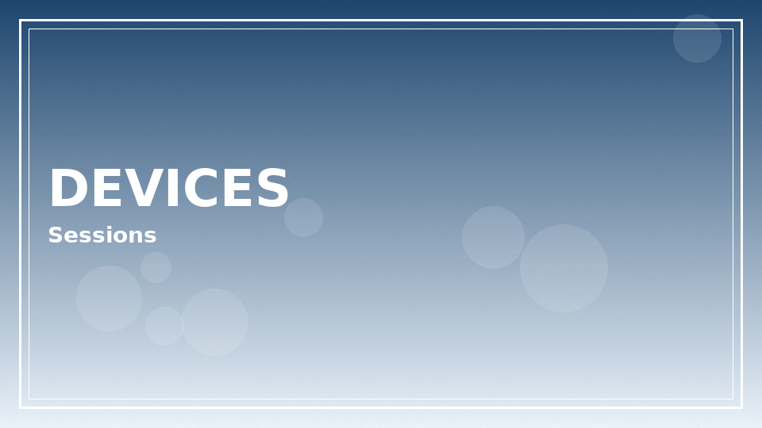

1win login basics
1win login usually accepts email or phone credentials created at registration. Bookmark the official domain, ignore look-alike URLs, and treat unexpected “verify your wallet” emails as phishing until proven otherwise.
Ready to explore 1win login on the official operator site? Review the live offer details before you deposit.
18+ only. Bonus wagering requirements, minimum deposit amounts, offer expiry windows, and game contribution rates vary — see operator T&Cs on the signup page before claiming any promotion. Gambling involves risk; never stake more than you can afford to lose.
Password reset without panic

- Use the on-site forgot-password link, not a link from a random message.
- Check spam folders for the reset email or SMS code.
- Create a long unique password; avoid recycling banking passwords.
- Sign out other devices if you suspect a compromise.
- Support will not ask for your full password in chat.
- One-time codes expire — request a fresh code rather than reusing screenshots.
- If phone number access was lost, prepare KYC documents before contacting support.
Two-factor and device hygiene

Where 1win login offers two-factor authentication, enable it. Shared family tablets in Buenos Aires apartments are convenient — and risky — if sessions stay open after someone finishes a bet slip.
| Scenario | Immediate action | Follow-up |
|---|---|---|
| Unrecognized device email | Change password | Review open sessions |
| SMS code delayed | Wait / resend once | Check carrier filtering |
| Captcha loops | Retry on clean network | Disable aggressive VPN |
| Account lock | Contact official support | Complete identity checks |
Multi-device habits

| Device | Tip | Extra caution |
|---|---|---|
| Personal phone | Biometric unlock OK | OS updates |
| Work laptop | Avoid saving passwords in shared browsers | Corporate monitoring |
| Tablet | Separate user profiles | Kids must not access — 18+ only |
Never encourage anyone under 18 to access gambling logins. Keep devices locked and app icons off shared home screens used by minors.
Phishing patterns targeting 1win login traffic
Phishing sites mimic 1win login forms with cloned logos and urgent countdown banners. The giveaway is often a slightly altered domain, a missing HTTPS padlock detail, or a form that asks for SMS codes plus full card PANs on the same screen. Real cashier flows separate concerns; fake ones harvest everything at once.
Email subject lines that claim your withdrawal is blocked until you ‘re-verify within 30 minutes’ are classic bait. Navigate to the site by typing the known domain or using your trusted bookmark — do not click the email button. If the account is fine after a manual login, report the message as phishing and move on.
SIM-swap risk matters for phone-based authentication. If your mobile carrier account has a weak password, harden it. An attacker who controls your SMS channel can request resets. Prefer authenticator-app based second factors when an operator offers them.
Public computers in cybercafés near universities remain risky for any gambling login. Private windows are not enough if keyloggers exist. Use your own device. Clear sessions when borrowing a partner’s laptop, and never leave stay-signed-in ticked on shared hardware.
Credential stuffing attacks reuse passwords from unrelated breaches. Unique passwords defeat that path. If you previously reused a password and suddenly see unfamiliar logins, reset immediately and review wallet activity.
When support asks for KYC, they should not ask you to send documents through an unofficial WhatsApp number found on a forum. Stick to in-account upload tools. Our legality and Argentina pages discuss why verification happens; this login page focuses on keeping the front door closed to impostors.
Session discipline after stressful matches
Emotional states after a derby loss are poor moments to troubleshoot login errors repeatedly. If access fails, step away for fifteen minutes before the fifth reset attempt. Frustration leads to mistakes like entering codes into the wrong browser tab that happens to be a phishing ad.
Parents and guardians should also ensure that autofill does not expose 1win login details on devices children use for homework. Adult entertainment accounts need adult-only device profiles — full stop.
Extended notes for login readers
Additional context for the login guide: adults reading from Argentina benefit from slow decision-making, written budgets, and a refusal to treat marketing banners as advice. Take ten quiet minutes before any deposit to list why you are opening the cashier at all.
Keep a simple ledger for a fortnight. Write dates, amounts, and product types. Patterns appear quickly — late-night crash games, salary-day spikes, or live football overreactions. Once visible, patterns are easier to change with deposit caps and app timers.
If a session stops being fun, end it without negotiating with yourself. Entertainment that requires a pep talk to continue is no longer entertainment. Use the responsible gambling block links when unease turns into distress.
Cross-read related hub pages instead of searching random screenshots. Internal articles on casino, app, login, bonuses, Aviator, Argentina context, and legality exist to answer different questions without repeating the same paragraph everywhere.
Finally, remember affiliate disclosures: sponsored links may earn this site a commission. That commercial fact does not change maths, law, or your household budget. Your constraints stay yours.
Revisit these reminders monthly. Habits drift. A calendar note labelled ‘budget review’ is a small tool with outsized value for anyone who wants play to remain optional and calm.
Practical checklist readers can save
Save this checklist somewhere offline: confirm official domain, set a deposit ceiling, enable stronger authentication where available, read wagering contribution rules before claiming promotions, and schedule a hard stop time. Tape the stop time next to your monitor if needed.
When travelling between provinces or abroad, re-check whether access rules and payment rails still match your expectations. Do not assume yesterday’s cashier equals today’s. Screenshots age poorly.
Talk about money stress early. Friends, family, or free support organisations can interrupt spirals that private shame extends. Seeking help is a strength move, not a spectacle.
Keep software updated on phones and laptops. Many account takeovers start with outdated browsers or malicious lookalike apps rather than clever password guesses alone.
Use separate browser profiles for everyday browsing and for any gambling logins if that mental separation helps you notice when you are about to break a limit.
Review open bets and unfinished bonus trackers before bed. Unfinished mental loops cause night-time checking. Closing loops deliberately protects sleep.
If you disagree with a settlement, gather evidence calmly and contact official support with timestamps. Parallel raging on social networks rarely improves outcomes and sometimes spreads personal data you meant to keep private.
When login works but cashier fails
Sometimes authentication succeeds while deposits error. That is usually a payment-rail or geo check, not a broken password. Document error codes and compare with guidance on 1win Argentina and app networking tips.
- Clear cache only after saving any pending bet receipts.
- Try the alternate official web entry if the app endpoint times out.
- Do not send passwords to freelancers offering “account recovery.”
- Read legal context if geo errors persist.
- Confirm you are not on a phishing clone — check certificate and domain.
- Disable browser extensions that inject scripts into forms.
- Retry after switching off experimental DNS filters temporarily.
- Escalate to support with screenshots that hide full card numbers.
| Include | Exclude |
|---|---|
| Approximate timestamps | Full passwords |
| Device model / OS | CVV / full PAN |
| Error text verbatim | Selfies with ID in public chats |
18+. This site publishes informational content for adults only. Gambling can be addictive — set limits, take breaks, and seek help if play stops being fun.
- Support and education: BeGambleAware
- Advice and treatment pathways: GamCare
If you feel play is becoming stressful, pause and contact free support resources. Nothing on this page is financial advice.